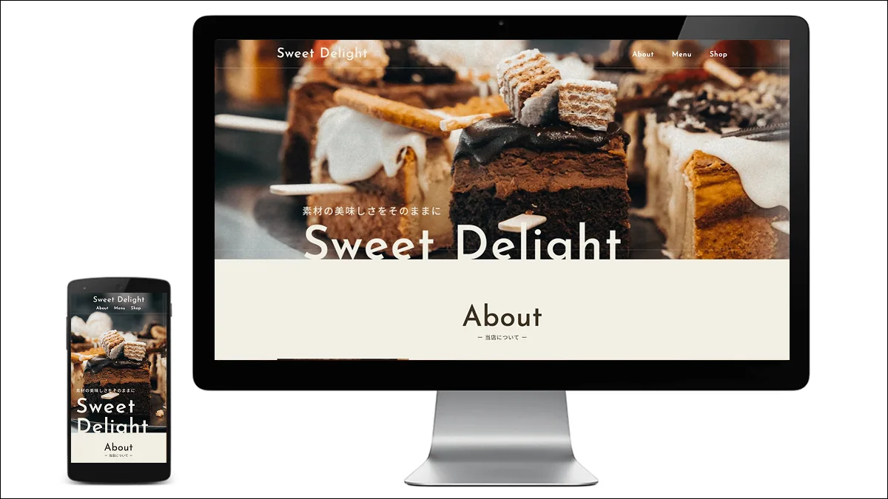

WORKS
Sweet Delight（スイーツ店）
ショップサイト／自主制作（架空）

架空のスイーツ店のサイトです。実在のお店ではありません。
学習を始めた時期に、練習として作ったものです。写真を大きく使うタイプの見せ方を試しました。
商品そのものが主役になる業種を想定しています。
こんな方に近い制作です
- 飲食店・菓子店など、商品の写真で伝えたい方
- 落ち着いた雰囲気のサイトにしたい方
POINT 制作のポイント
-
1
写真を主役にする
最初の画面いっぱいに商品の写真を置き、文字は最小限にしました。
説明を読ませる前に、まず「おいしそう」と思ってもらうことを優先しています。
-
2
余白を広くとる
見出しと本文のあいだ、セクションのあいだを広めにとりました。
情報を詰めないほうが、落ち着いた印象になります。
CONTACT 同じような制作のご相談
お店のサイトは、写真の質と見せ方でほとんど決まります。お手持ちの写真を見せていただければ、活かし方からご提案します。
＼ ご相談・お見積り・現状の診断は無料 ／